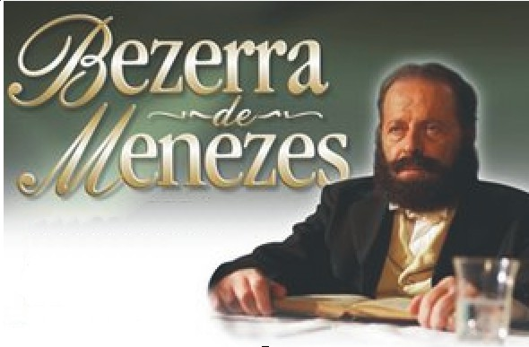

|  | ||||
 |
||||
Av. Presidente Kennedy , 415 – Centro – São Gonçalo.
Para quem vem do sentido Alcântara para Niterói, passando pelo Centro de SG, é o quarto prédio à direita, após o posto ESSO, que vem após um conjunto de prédios )
Terça: 15:00h
Quinta: 20:00h
Domingo: 18:00h
Centro Espírita Galiléia
Rádio Rio de Janeiro – 1400 AM
TV Espírita: www.tvcei.com
Estudo do novo testamento: Domingo às 15:30h.
Estudo com tema da família: Sexta às 18:00h.
Estudo mediúnico: Sexta às 20:00h e Domingo às 16:00h.
Estudo sistematizado ESDE : Terça às 17:00h. e Sábado às 18:00h.
Estudo da vida no mundo espiritual: Sábado às 16:00h.
Domingo às 18:00h.
Domingo às 16:30h.
Todo Segundo Sábado de cada mês às 18:00h.
Domingo às 16:00h. e Segunda às 19:00h.
Depósito em nome do Centro Espírita Galiléia
CAIXA ECONÔMICA: Agência: 4143 – operação: 013. Conta 11.215-2
O depósito poderá ser de qualquer valor pela CAIXA ou loterias.